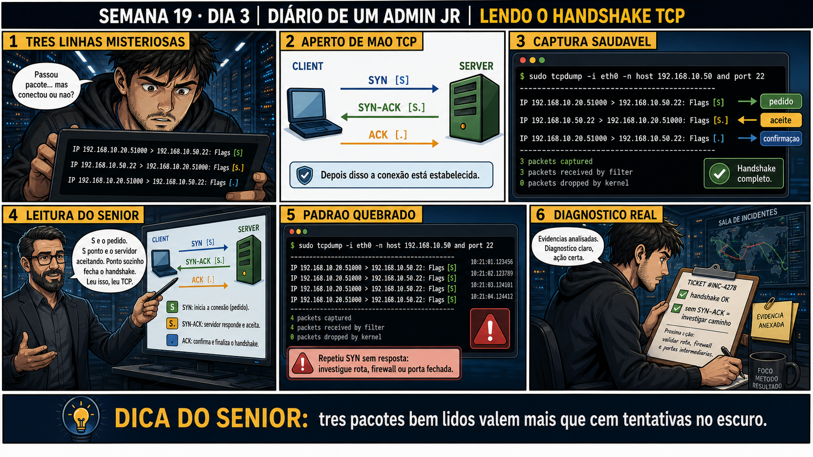

Semana 19 · Dia 3 | Nível Júnior — Redes
Lendo o Handshake TCP
três pacotes contam a história inteira de como uma conexão TCP nasce
ANTES DE ALTERAR, OBSERVE. DEPOIS DE ALTERAR, VALIDE.
1. O chamado
#1903
PRIORIDADE ALTA
11:45
aberto por: suporte N1
host: srv-app-05 · serviço: checkout do e-commerce
"O cliente diz que a conexão trava antes de qualquer coisa acontecer — nem chega a trocar dados."
Antes de suspeitar da aplicação, o que você confirma primeiro?
💡 Passa o mouse nas palavras destacadas pra ver uma dica rápida — clica se quiser a explicação completa com analogia.
2. Antes de ver as opções — tenta responder
🧠 Recall ativo: quais são as três flags do handshake TCP, na ordem certa, e quem envia cada uma
(quem inicia a conexão vs. quem responde)?
1) O cliente envia
SYN
pro servidor: "quero abrir uma conexão". 2) O servidor responde com
SYN-ACK:
"recebi seu pedido, e aqui está o meu também". 3) O cliente fecha o ciclo com
ACK:
"confirmado, conexão estabelecida". Só depois dessas três trocas é que dados reais começam a fluir.
3. Questão comentada — clica numa alternativa
Numa captura tcpdump, você vê o cliente enviando repetidos pacotes com Flags [S]
pro servidor na porta 443, mas nunca recebe nenhum pacote de volta com Flags [S.]. O que essa evidência indica?
💡 Analogia do Sênior para Fixar: O princípio fundamental de 03 HANDSHAKE TCP LEITURA é como o alicerce de sustentação de um viaduto: garante que a estrutura de comunicação suporte alto tráfego sem colapsar.
4. Decodificador de conceitos
Clica em qualquer termo pra ver a definição completa e uma analogia do dia a dia:
5. Ferramentas e leitura da evidência
| Flag | Significado |
|---|---|
[S] | SYN — pedido de abertura de conexão, primeiro pacote do handshake. |
[S.] | SYN-ACK — resposta do servidor, confirmando e propondo sua própria sequência. |
[.] | ACK — confirmação, sem dado novo (aqui, fecha o handshake). |
--- handshake completo (conexão estabelecida com sucesso) --- 14:50:01 IP cliente.51500 > servidor.443: Flags [S], seq 1000, win 64240, length 0 14:50:01 IP servidor.443 > cliente.51500: Flags [S.], seq 5000, ack 1001, win 65160, length 0 14:50:01 IP cliente.51500 > servidor.443: Flags [.], ack 5001, win 502, length 0 14:50:01 IP cliente.51500 > servidor.443: Flags [P.], seq 1001:1087, ack 5001, length 86 --- dados reais só começam a fluir depois das 3 primeiras linhas --- --- handshake travado (chamado #1903) --- 14:51:10 IP cliente.51501 > servidor.443: Flags [S], seq 2000, win 64240, length 0 14:51:11 IP cliente.51501 > servidor.443: Flags [S], seq 2000, win 64240, length 0 14:51:13 IP cliente.51501 > servidor.443: Flags [S], seq 2000, win 64240, length 0 # retransmissões do SYN, nunca chega SYN-ACK — travou na primeira etapa
5.1 O painel 5 da prancha de hoje mostra o sênior explicando que retransmissão de SYN não é bug do cliente
Um colega vê o cliente reenviando o mesmo SYN várias vezes e conclui que o software cliente está com defeito.
Por que o cliente reenviar o mesmo SYN repetidamente é um comportamento esperado
e correto, não um sinal de defeito no cliente?
💡 Analogia do Sênior para Fixar: Diagnosticar anomalias em 03 HANDSHAKE TCP LEITURA é como o eletricista usando o multímetro no quadro de disjuntores: mede a passagem de sinal no ponto exato da falha.
5.2 "Se eu vejo Flags [S.] do servidor, a conexão já está pronta pra trocar dados?"
Um colega vê o SYN-ACK do servidor na captura e já considera a conexão totalmente estabelecida.
Por que ver apenas o SYN-ACK [S.] não é prova suficiente de que o handshake foi
concluído com sucesso?
💡 Analogia do Sênior para Fixar: Aplicar as boas práticas de 03 HANDSHAKE TCP LEITURA é como o protocolo de segurança da aviação: elimina pontos únicos de falha e garante previsibilidade operacional.
6. Procedimento profissional
- Capture o tráfego filtrado por host e porta relevantes, como visto no Dia 2.
- Localize a sequência esperada: [S] do cliente, [S.] do servidor, [.] do cliente.
- Se só houver [S] repetidos sem resposta, suspeite de bloqueio ou porta fechada no destino.
- Se houver [S] e [S.] mas nenhum [.] final, suspeite de perda de pacote no caminho de volta.
- Só depois do handshake completo, investigue o conteúdo real dos dados trocados.
7. Laboratório guiado — marca conforme for testando
Segurança: execute os testes apenas em VMs descartáveis e confirme nomes de discos, hosts e arquivos antes de cada comando.
- Capture tráfego enquanto conecta com sucesso a um serviço ativo (ex.: curl pra um servidor web na VM).$ sudo tcpdump -i eth0 -n port 80 # em outro terminal, ao mesmo tempo: $ curl http://localhost # opcional: ver só os pacotes do handshake, ignorando o resto da conversa $ sudo tcpdump -i eth0 -n 'tcp[tcpflags] & (tcp-syn|tcp-ack) != 0'
🔍 Detalhar esse comando
- tcp[tcpflags]
- Acessa diretamente o byte de flags dentro do cabeçalho TCP do pacote, permitindo montar um filtro por bit em vez de usar só as palavras prontas do tcpdump.
- & (tcp-syn|tcp-ack)
- Operação bit a bit (AND) que verifica se o bit de SYN OU o bit de ACK está ligado naquele pacote —
tcp-synetcp-acksão apelidos que o tcpdump já conhece pros bits de flag correspondentes. - != 0
- Só deixa passar o pacote se essa operação der resultado diferente de zero, ou seja, se pelo menos um dos dois bits (SYN ou ACK) estiver realmente presente — filtrando exatamente os pacotes do handshake (SYN, SYN-ACK, ACK) e ignorando o resto da conversa.
Resultado esperado: as três linhas do handshake completo visíveis na captura.Se o seu resultado foi diferente
O handshake não aparece, só a linha de erro do curl → confirme que existe realmente um servidor web escutando na porta 80 da VM (ex.:sudo python3 -m http.server 80ou nginx). Sem serviço ativo, o curl falha antes até de completar o SYN, e não há handshake nenhum pra capturar. - Tente conectar numa porta fechada da mesma VM e capture o resultado.$ sudo tcpdump -i eth0 -n port 9999 # em outro terminal: $ curl http://localhost:9999
🔍 Detalhar esse comando
- sudo tcpdump -i eth0 -n port 9999
- Captura na interface eth0, filtrando só tráfego envolvendo a porta 9999 (origem ou destino), sem resolver nomes.
- curl http://localhost:9999
- Gera uma tentativa de conexão a essa porta, no próprio host, pra observar como o tcpdump captura (ou não) o handshake dessa tentativa contra uma porta fechada.
Resultado esperado: ou nenhuma resposta (retransmissão de SYN), ou um pacote com flag RST recusando a conexão.🧑🏫 Aqui entra o Mentor (em breve): se aparecer RST em vez de silêncio, este é o ponto onde o chat com o Sênior-IA vai explicar a diferença entre os dois comportamentos.Se o seu resultado foi diferente
Aparece "Connection refused" no curl, mas nenhum pacote RST aparece na captura filtrando -i eth0 → clássico: tráfego pralocalhostnão passa pela interfaceeth0, passa pela interface de loopbacklo. Refaça a captura com-i loem vez de-i eth0pra testes que usam localhost — esse é um dos erros mais comuns de quem está começando com tcpdump. - Compare visualmente as duas capturas lado a lado: handshake completo vs. handshake travado.Resultado esperado: diferença clara na quantidade e no tipo de flags presentes.
- Documente, em uma frase, em qual etapa cada captura travou (ou não travou).Resultado esperado: relatório curto identificando corretamente a etapa de cada cenário.
8. Validação e encerramento
- Você identifica SYN [S], SYN-ACK [S.] e ACK [.] numa linha de captura.
- Você sabe que só depois das três etapas dados reais começam a fluir.
- Você reconhece retransmissão de SYN sem resposta como sinal de bloqueio ou porta fechada.
- Você sabe que SYN-ACK sozinho não é prova de conexão estabelecida — falta o ACK final.
Rollback e limites
Ler um handshake é observação pura, sem nenhum risco de alteração no sistema.
O cuidado real é de interpretação: confundir retransmissão normal (dentro de alguns segundos, tentando
estabelecer) com um ataque ou anomalia pode levar a conclusões erradas — o contexto (quantas tentativas, de
onde, com que frequência) sempre importa antes de escalar como incidente de segurança.
💡 Sobre repetição espaçada: "três pacotes contam a história inteira" é um
padrão de leitura que vale a pena automatizar — reconhecer handshake completo vs. travado de relance, sem
precisar reler devagar toda vez. O Anki vai reforçar esse reconhecimento rápido.
9. Resposta final
Alternativa correta: A. Nesta aula, a evidência de SYN repetidos sem
SYN-ACK de volta indicou uma conexão travada na primeira etapa do handshake. O ponto central do caso é este:
três pacotes contam a história inteira de como uma conexão TCP nasce.
🔓 O que você desbloqueou hoje
Capacidade de ler o three-way handshake numa captura e identificar exatamente
em qual etapa uma conexão trava. Amanhã você aprende a salvar essas capturas em arquivo, pra analisar depois
ou compartilhar com outra pessoa da equipe.